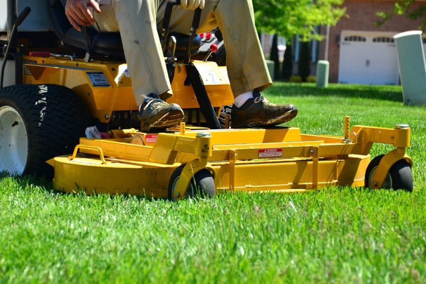

Lawn Mowing Services in Lakeway, TX
Lakeway is an upscale lakeside community along Lake Travis, where beautifully maintained landscapes are not just appreciated — they're expected. With a population of 20,000+, this prestigious Travis County community features some of the most stunning homes and properties in the entire Austin metro area. Cathey's Lawn Care is proud to provide premium lawn mowing services to Lakeway residents who demand nothing less than perfection. Lakeway's Hill Country location features terraced landscapes, rocky soil, and lake proximity that creates unique microclimate conditions for lawn and landscape care, and our crew has the expertise and equipment to navigate these unique conditions while delivering flawless results on every visit.
Why Professional Lawn Mowing Matters in Lakeway
Regular mowing promotes lateral growth and root development, resulting in a thicker, more resilient lawn that naturally crowds out weeds. When grass is maintained at the proper height, it develops deeper root systems that are better equipped to handle drought conditions and resist disease. Our team knows the optimal cutting heights for different grass varieties common in Central Texas, including Bermuda, St. Augustine, Zoysia, and Buffalo grass. We adjust our mowing patterns and blade heights seasonally to ensure your lawn receives exactly the care it needs throughout the year.
For Lakeway properties specifically, this is especially important given the local conditions. Lakeway's Hill Country location features terraced landscapes, rocky soil, and lake proximity that creates unique microclimate conditions for lawn and landscape care. Our team at Cathey's Lawn Care adapts our lawn mowing techniques to account for the specific challenges that Lakeway homeowners face, ensuring optimal results on every property we service throughout Travis County.

Our Comprehensive Mowing Process
Every visit from Cathey's Lawn Care includes more than just running a mower across your yard. We begin with a thorough inspection of your property, checking for debris, obstacles, and any areas that need special attention. Our mowing service includes precise edging along walkways, driveways, and landscape beds, string trimming around trees, fences, and other obstacles, and a complete cleanup of all grass clippings from hardscaped surfaces. We leave your property looking immaculate every single time.
When serving Lakeway properties, our crew pays particular attention to the conditions unique to this Travis County community. Whether we're working on a property in Lakeway proper, Rough Hollow, The Hills, or any other Lakeway neighborhood, we bring the same level of professionalism, attention to detail, and commitment to excellence that has made Cathey's Lawn Care the top-rated lawn mowing provider in the area.
Customized Mowing Schedules
We offer flexible mowing schedules tailored to your lawn's specific needs and your budget. During the peak growing season in Central Texas (typically March through October), most lawns benefit from weekly mowing. In the cooler months, we transition to bi-weekly service. Our team monitors weather conditions and adjusts schedules accordingly, ensuring your lawn is never cut too short during drought or too infrequently during rapid growth periods. Whether you need one-time service or year-round maintenance, we have a plan that works for you.
Benefits of Professional Lawn Mowing in Lakeway
Understanding Lakeway's Climate and Its Impact on Your Landscape
Lakeway's microclimate is influenced by its proximity to Lake Travis and its Hill Country elevation. Lakeway's Hill Country location features terraced landscapes, rocky soil, and lake proximity that creates unique microclimate conditions for lawn and landscape care. The lake moderates temperature extremes somewhat, but the rocky, shallow soils characteristic of the area present their own set of challenges for landscape maintenance. Many Lakeway properties feature steep terrain and terraced landscapes that require specialized equipment and techniques. The combination of premium landscaping and challenging terrain means lawn mowing in Lakeway demands a higher level of skill and attention than typical suburban properties. Cathey's Lawn Care rises to this challenge on every visit, bringing the expertise that Travis County's most discerning homeowners expect.

Why Lakeway Homeowners Choose Cathey's Lawn Care
Lakeway residents choose their community for its unparalleled beauty, lake access, and quality of life — and they expect their lawn care provider to match that standard of excellence. As one of Austin's most prestigious communities, Lakeway residents expect premium-quality lawn care that matches the caliber of their homes and the beauty of the Lake Travis shoreline. At Cathey's Lawn Care, we understand that serving Lakeway means delivering premium-quality lawn mowing with meticulous attention to detail. Lakeway's Hill Country location features terraced landscapes, rocky soil, and lake proximity that creates unique microclimate conditions for lawn and landscape care. Our team has extensive experience working on Lakeway properties in Lakeway proper, Rough Hollow, The Hills, Flintrock Falls, Cardinal Hills, Serene Hills and throughout the greater Travis County lakeside area. We bring the right equipment, the right techniques, and the right attitude to every Lakeway job. For a community of 20,000+ residents who expect the best, Cathey's Lawn Care delivers nothing less.
We proudly serve Lakeway proper, Rough Hollow, The Hills, Flintrock Falls, Cardinal Hills, Serene Hills and all surrounding neighborhoods in Lakeway. No matter where your property is located in the Lakeway area, Cathey's Lawn Care can provide the professional lawn mowing services you need to keep your landscape looking its best. Call us today at (512) 413-8455 for a free, no-obligation estimate.
Lawn Mowing Service Areas Near Lakeway
In addition to Lakeway, we provide professional lawn mowing services throughout the Greater Austin area: